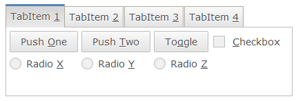
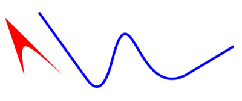
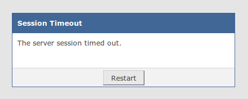
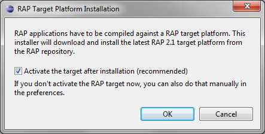

You may also check the New and Noteworthy for RAP 2.0 and the RAP 2.0 migration guide.
The SWT method MenuItem.setAccelerator( int ) has been implemented.
This method can be used to bind key shortcuts to menu items easily. For example,
the following statement will lead to a selection event being fired on the menu item
when Ctrl+Shift+1 is pressed.
MenuItem menuItem = new MenuItem( parent, SWT.PUSH ); menuItem.setAccelerator( SWT.CTRL | SWT.SHIFT | '1' );
Please note that the browser already defines a number of key bindings. Some browsers do not allow to override all of these bindings.
All text after a tab character will now be aligned to the right of the item. This feature, called accelerator text is typically used to display the accelerator shortcut. Example:
menuItem.setText( "Push One\tCtrl+Shift+1" );
Mnemonics are a simple method to select widgets using the keyboard.
Support for mnemonics has been implemented for the following widgets:
MenuItem, ToolItem, TabItem, CTabItem,
Button, Label, CLabel, and Group.

The mnemonic key is indicated by an underlined character in the widget's text.
Any character can be made a mnemonic by inserting an ampersand character (&)
before it.
However, only a-z, A-Z and 0-9 will be recognized when
the matching key is pressed.
Mnemonics must be enabled for the UISession by setting the modifier key or key-combination that makes the mnemonics visible:
display.setData( RWT.MNEMONIC_ACTIVATOR, "CTRL+ALT" );
Any combination of CTRL, SHIFT and ALT is valid. You should not use ALT by itself, because the OS may already be using that. Unlike in Windows, the mnemonics disappear again when the modifier is released. Mnemonics have a higher priority than key bindings, accelerators or key events.
It's now possible to listen to changes of the display size.
The display size changes whenever the browser is resized or when a mobile device is rotated.
To do so, attach an untyped SWT.Resize listener to the Display
as shown in the example below.
Please note that this feature is not yet supported in SWT ().
display.addListener( SWT.Resize, new Listener() {
public void handleEvent( Event event ) {
System.out.println( "Display size: " + event.width + "x" + event.height );
}
} );
Markup support for Tree and Table has been added in RAP 1.5. By using <a>
tags you can add hyperlinks to your item text. In addition to “real” hyperlinks, that open a
page in the browser, it is now also possible to let those hyperlinks trigger a selection event.
To do so, you have to set the target attribute to _rwt
.
Clicking on the link will trigger an SWT.Selection event with the details
field set to the constant RWT.HYPERLINK.
Table table = new Table( parent, SWT.BORDER );
table.setData( RWT.MARKUP_ENABLED, Boolean.TRUE );
table.addSelectionListener( new SelectionAdapter() {
public void widgetSelected( SelectionEvent event ) {
if( event.detail == RWT.HYPERLINK ) {
// event.text contains the value of hyperlink href attribute
}
}
} );
TableItem item = new TableItem( table, SWT.NONE );
item.setText( "<a href=\"edit-item\" target=\"_rwt\">edit\"</a>" );
The methods GC.drawPath( Path ) and GC.fillPath( Path ) have been
implemented.
Now it's possible to draw complex shapes using the Path API.

Support for the CSS properties background-position and background-repeat
has been added to the following widgets: Button, FileUpload,
Composite, Label, CLabel, Text and Link.
See for more details.
Composite {
background-repeat: no-repeat;
background-position: right bottom;
...
}
Until now, you had to turn off session cookies in the servlet container in order to support access to a RAP application from multiple browser tabs. This is not needed anymore. The framework can now handle multiple connections from within the same HTTP session. For every connection, a new UISession will be created.
An improvement that has often been requested () is to terminate a UISession as soon as the user navigates away from the browser page.
Now the WebClient sends a notification to the server just before the page is left. The server will then terminate and cleanup the UISession. For applications with a long session timeout, this feature will significantly reduce the memory consumed by active UISessions.
A UISession now provides a reference to the ApplicationContext it belongs to. This allows to access application-scoped instances such as the resource manager from a non-UI thread without having to wrap the code in a UISession runnable. For example, the following code:
uiSession.exec( new Runnable() {
public void run() {
RWT.getApplicationContext().getAttribute( "foo" );
}
} );
can now be replaced with this one-liner:
uiSession.getApplicationContext().getAttribute( "foo" );
When registering an application using an ApplicationConfiguration, you can now add a custom exception hander to catch and process exceptions that happen in your event handling code.
This handler can be used to display a custom error page instead of the default HTTP 500 containing the stacktrace. If you find that the exception is not critical, you can also decide to write the exception to an error log and let the application continue.
application.setExceptionHandler( new ExceptionHandler() {
@Override
public void handleException( Throwable exception ) {
// display error dialog, redirect to error page,
// write exception to log, ...
}
});
The RAP server now accepts re-sent requests. In case of a connection problem, a client can decide to retry and send the same request again. If the server had already received and processed the request, it will send the same response again. For details, see .
RAP now uses CSS3 to render rounded borders and gradients in Internet Explorer 10. Previously SVG or VML were used (and still are, in older browsers) to achieve these effects. With this update there are considerably less DOM elements created than before.

The error message box that is displayed in case of network problems, session timeout etc. got a slightly new look. All error messages can now be internationalized. For details, see .
In RAP 2.0, we introduced the RemoteObject API that allows custom components to synchronize with their client part over the JSON protocol. This API was still marked as provisional and is now complemented with a new JSON API for marshalling and unmarshalling arbitrary data structures.
Consequently, the untyped Objects and Maps in the method signatures of RemoteObject and OperationHandler have been replaced with the new JSON types. Custom component developers should have a look at the classes JsonValue, JsonArray, and JsonObject and adjust their custom components.
For example, to pass a structured value to the client as a JSON array, you have to create a JsonArray instead of Object[]:
// set property size to 200x300 using a JSON array [200, 300] remote.set( "size", new JsonArray().add( 200 ).add( 300 ) );
For example, to pass a structured value to the client as a JSON array, you have to create a JsonArray instead of Object[]:
remoteObject.setHandler( new AbstractOperationHandler() {
@Override
public void handleNotify( String event, JsonObject properties ) {
int index = properties.get( "index" ).asInt();
// process event ...
}
} );
The target installer is meant to get beginners started quickly, so it should be as simple as possible. We've removed the choice between “latest stable version” and “latest release version” and let the installer always get the latest target that matches the tools version. This change will prevent incompatibilities between target and tools, which unfortunately lead to some trouble in the past.
